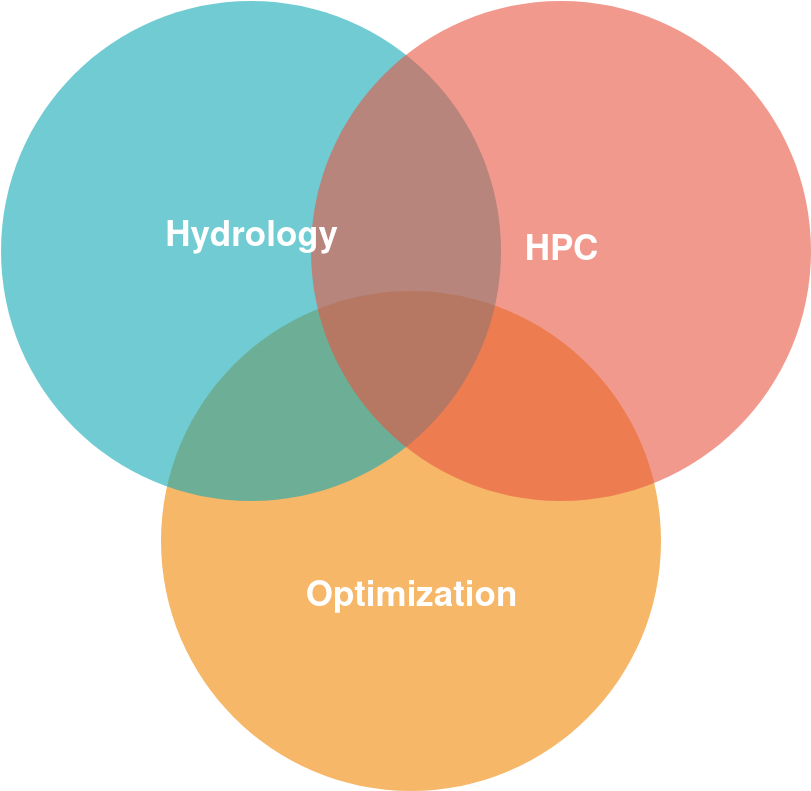

An empirical study on the calibration of the GEOtop model using supercomputers
Stefano Campanella
Giacomo Bertoldi, Alberto Sartori


This presentation in one sentence
Exploit HPC for the calibration of parameters of the GEOtop hydrological model.
Outline
- 10'000 foot view of GEOtop
- Example of calibration using GEOtoPy
- Hyperparameter optimization
- The project HPC take-away
Motivations
Disclaimer
(I am not an hydrologist)
Poor man's intro to hydrological modeling
meterological forcing ↦ soil water content
PDEs + discretization ⇒ Large system of ODEs
# of parameters ≈ O(volume) + O(surface)
GEOtop, 1D simulations
# parameters is still large, sensitivities are high
CPU-bounded, fully sequential, ETA ≈ 1 min
An optimization problem
loss = ||predictions - observations||
Huge search space ⇒ local search
Expensive loss ⇒ parallel ← HPC kicks in
A calibration example
Still to be answered
- How to compare predictions and observations?
- Which algorithm and hyperparameters?
- How many CPUs?
- How long should I wait?
- How “good” are the results?
- Can I wait less or use less CPUs?
Hyperparameter optimization
Multi-objective optimization using randomized synthetic data, with two criteria:
- quality of the calibration
- execution time
This task is not possible on commodity hardware
HPC take-away
A philosophical, personal take on the subject
Don't reinvent the wheel
“Code reuse is the Holy Grail of Software Engineering”
Douglas Crockford
Beware of the HPC hype and its mental traps, but stay curious
“Throughout human history, as our species has faced the frightening, terrorizing fact that we do not know who we are, or where we are going in this ocean of chaos, it has been the authorities—the political, the religious, the educational authorities—who attempted to comfort us by giving us order, rules, regulations, informing—forming in our minds—their view of reality. To think for yourself you must question authority and learn how to put yourself in a state of vulnerable open-mindedness, chaotic, confused vulnerability to inform yourself.”
Timothy Leary, How to Operate Your Brain (1994)
Acknowledgments
The research reported in this work will be supported by OGS, Eurac and CINECA under HPC-TRES program award number 2019-33
Q&A
“He who knows does not speak;
He who speaks does not know”
Laozi, Tao Te Ching